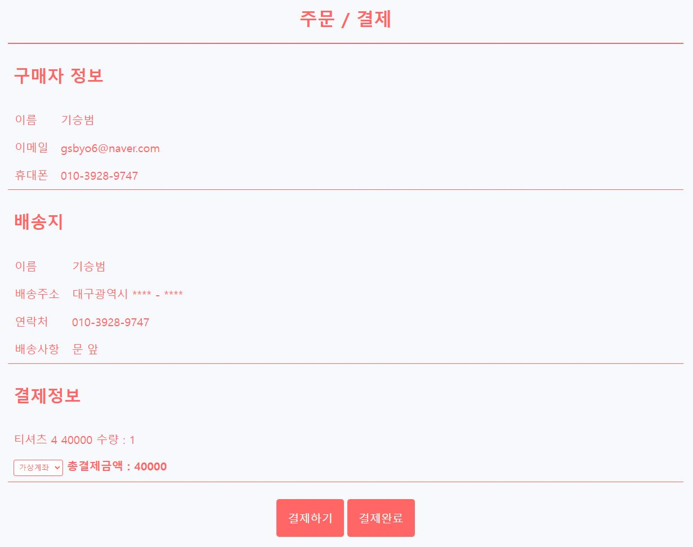
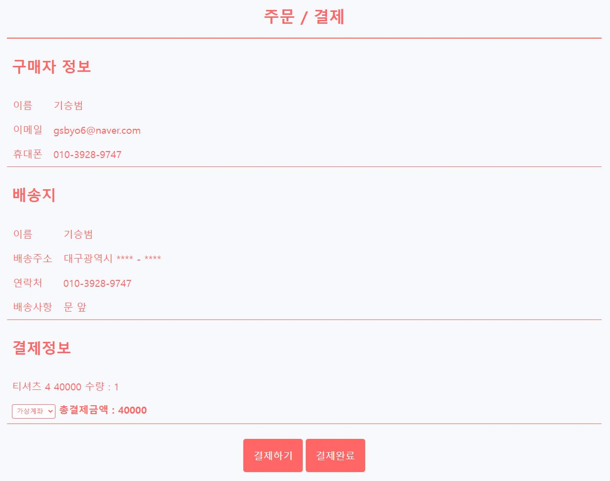
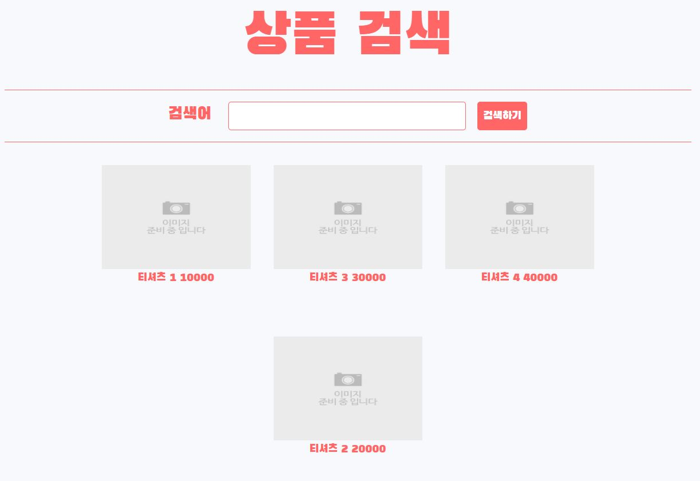
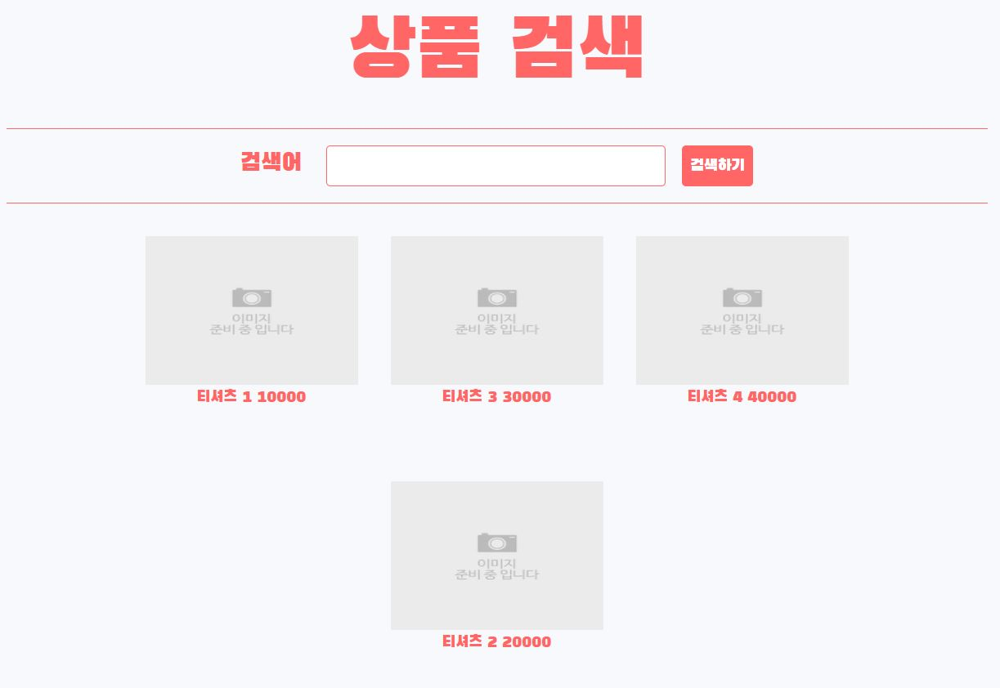
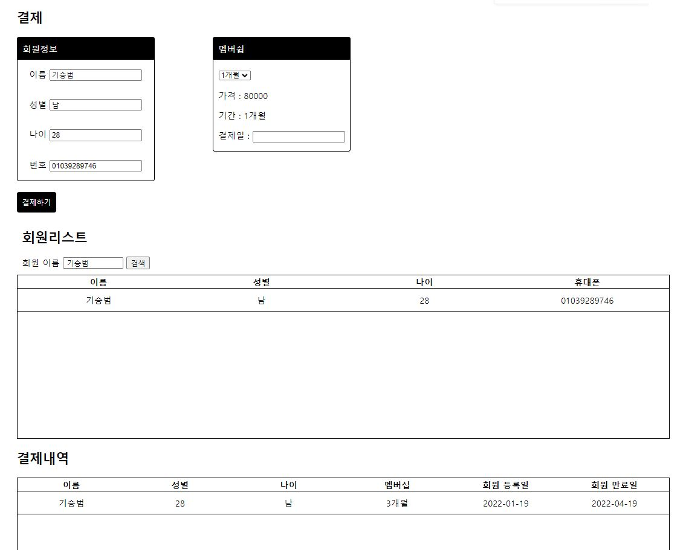
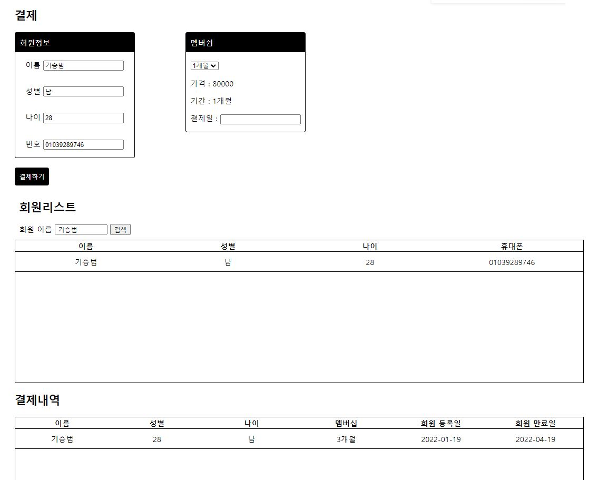

기승범
초보 개발자
010-3928-9747
나이
대학교
전공
사는 지역
1994년생
계명 대학교
컴퓨터 공학
대구 남구
소개
백엔드 개발자를 지향하고 있는 기승범 입니다. 아직 모르는게 많지만 알려고 하는 의지와 학습의 자세는 준비가 되어있습니다. 스스로의 장점으로는 풀기 어려운 문제를 만났을 때 끝까지 풀려고 하는 호기심과 끈기를 가지고 있으며, 최근 웹개발을 공부하면서 이러한 장점으로 어느정도 결과를 만들었다고 생각하고 있습니다. 단점으로는 낯을 가려서 팀원 과의 의사소통이 잘 이루어지지 않을 수 있으나 주위 사람들에게는 말을 많이 하는 편이기 때문에 팀원들과 적응해 나간다면 무리없이 잘해나갈수 있다고 생각합니다.
경험 기술
SpringBoot / mysql / jsp
Node.js / Mongodb / ejs
html, css
javascipt, juqery
ajax, axios
프로젝트
결과물 1.


 

 

Node.js / ejs / Mongodb 를 사용하여 만든 데모 쇼핑몰 입니다.
상품 관리 - 상품을 등록하거나 수정 삭제를 할 수 있습니다.
리뷰 등록 - 임의의 상품의 리뷰를 등록 할 수 있습니다.
* 등록 된 상품의 _id 기준으로 상위 4개에만 리뷰를 등록하여 상세페이지에서 확인 가능합니다.
주문 관리 - 결제가 완료 된 상품의 운송장을 등록 할 수 있습니다.
My Page - 자신의 구매내역을 확인 할 수 있습니다. 결제와 배송 여부에 따라서 주문한 물품의 상태를 확인 할 수 있습니다.
* 운송장이 입력 된 주문의 경우 배송 추적이 가능하며, API로는 스마트택배를 사용하고 있습니다.
상품 클릭 시에는 상세페이지로 이동하여 상품을 구매 할 수 있으며, 결제의 경우 구매 클릭 시에 DB에 결제 정보가 저장되며 결제시에는 구매 클릭 시의 DB 데이터를 조회하여 업데이트를 하고 있습니다.
상품 구매 페이지에서 결제하기 / 결제완료 버튼 2개가 존재 하는데 결제하기의 경우 가상계좌를 통한 아임포트 API 사용하며, 이 경우는 현재 결제 진행 상태가 완료가 되지 않고 입금 전 상태로 처리 됩니다. 결제완료의 경우는 강제적으로 결제를 완료로 처리합니다.
검색은 단순하게 모든 상품의 이름과 검색어가 포함 유무에 대하여 비교하고 있습니다.($regex)
서버의 경우 네이버클라우드(우분투)를 사용하고 있습니다.
페이지 주소 - gsbyo.shop/home
코드 - github link
테스트 계정 test / test
프로젝트
결과물 1.

 



SpringBoot / jpa / mysql 사용한 회원 관리 프로그램 입니다.
회원을 등록하거나 수정 / 삭제를 할 수 있습니다.
해당 회원에 대하여 등록된 회원권을 결제 할 수 있습니다.
검색 된 회원을 클릭 시 결제 내역을 알 수 있으며 결제내역을 취소하거나 환불을 할 수 있습니다.
* 환불의 경우 해당 결제의 만료일이 당일로 변경되며 환불 Entity가 생성됩니다.
회원권을 등록 할 수 있습니다.
결제 내역과 환불 내역을 추출하여 정산된 결과를 볼 수 있습니다.
* 월(month)에 해당되는 데이터가 없는 경우 0으로 산출됩니다.
코드 - github link
결과물 3.


SpringBoot / mybatis / mysql 사용한 간단한 CRUD 테스트 입니다.
텍스트 박스 날짜와 할 일을 입력하여 나타내고 있습니다.
X 버튼을 클릭 시 삭제가 되며, 수정하고 싶은 박스를 누르면 입력 박스에 해당되는 데이터가 입력되며, 수정을 할 수 있습니다.
코드 - github link